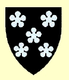

3004564 Alexander Fraser 1st of Philorth
* omkring 1339 Cowie, Kincardineshire, Scotland
† före 1411 Scotland
Sheriff of Aberdeen, Riddare
Blev ca 71 år
* omkring 1339 Cowie, Kincardineshire, Scotland
† före 1411 Scotland
Sheriff of Aberdeen, Riddare
Blev ca 71 år

6009128 William Fraser of Cowie & Durris
* omkring 1318 Scotland
† 1346-10-17 Durham, England
Riddare
Blev ca 28 år
* omkring 1318 Scotland
† 1346-10-17 Durham, England
Riddare
Blev ca 28 år

6009129 Margaret Moray
* 1318 Scotland
† 1364 Scotland
Blev högst 46 år
* 1318 Scotland
† 1364 Scotland
Blev högst 46 år
12018258 Lord Andrew Murray 2nd of Tullibardine & Bothwell
* före 1284 Pearth, Pearthshire, Scotland
† 1332-10-07 Pearthshire, Scotland
Lord av Tullbardine
Blev minst 48 år
* före 1284 Pearth, Pearthshire, Scotland
† 1332-10-07 Pearthshire, Scotland
Lord av Tullbardine
Blev minst 48 år